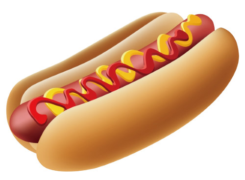
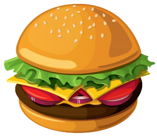
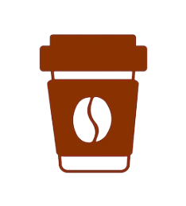

Välkommen till
Norra Café



Stationsgatan 14
87230 Kramfors
Mån-Fre: 08:00-18:00
Lör-Sön: 10:00-16:00
Norra Café ligger i hjärtat av Kramfors, precis vid den charmiga tågstationen. Här möts doften av nybryggt kaffe, nybakade bullar och gemenskapen från både resenärer och stamgäster. Vi är stolta över att servera lokalt tillagad mat och fika i en varm, hemtrevlig miljö.
För att vi tror på äkta smaker och vänligt bemötande. Hos oss hittar du Kramfors godaste mat, lagad med kärlek och noggrant utvalda råvaror. Stanna till före tåget, ta en paus mitt i dagen, eller njut av en fika tillsammans med vänner, Norra Café är platsen där varje stund smakar lite bättre.